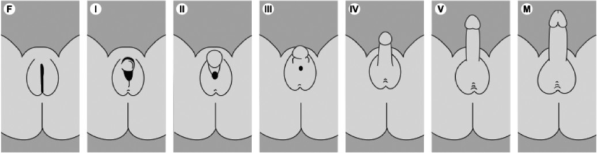
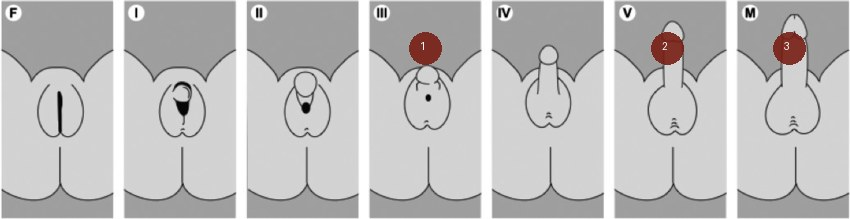
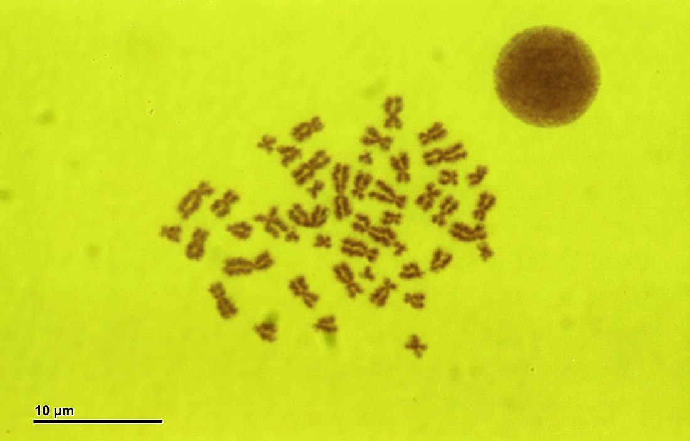

Variations du développement sexuel
Dix situations à tenir ensemble
- DX.1 — urgence néonatale 🚩 E1 Ne rang : la perte de sel se traite avant tout classement par fréquence, car elle menace la vie[1].
- DX.2 — forme non urgente Ne rang : elle regroupe les variations qui laissent le temps du bilan une fois la menace vitale écartée[1].
- DX.3 — assignation précoce Ne rang : l'assignation figure parmi les buts initiaux, mais elle n'est pas un diagnostic de mécanisme[1].
- DX.4 — indication psychosociale Ne rang : un motif seulement social ne justifie pas l'opération, et ce refus ne se compte pas en pourcentage[3].
- DX.5 — hyperplasie surrénalienne 🚩 E2 Ne rang : elle domine les causes surrénaliennes dépistées, sans pourcentage de rang dans cette liste[4].
- DX.6 — insensibilité aux androgènes Ne rang : la mutation du récepteur est un mécanisme propre, rare au sens où elle ne se confond pas avec l'excès d'androgènes[1].
- DX.7 — dysgénésie Ne rang : elle touche la fabrication de la gonade, et aucune série suisse citée ne lui donne un pourcentage de liste[1].
- DX.8 — état civil Ne rang : la mention du sexe est une question de registre, pas une maladie de plus à classer par incidence[2].
- DX.9 — troisième catégorie Ne rang : la commission la rejette pour l'instant, et les associations la jugent stigmatisante[3].
- DX.10 — suivi prolongé Ne rang : le conseil dure jusqu'à l'âge adulte de ce fait il ferme la liste au lieu d'ouvrir un rang de fréquence[3].
Tableau comparatif
| Signe clé | Examen qui tranche | Mécanisme | Conduite immédiate | Rang E |
|---|---|---|---|---|
| DX.1 urgence | Ionogramme | Déficit cortisol | Correction du sel | E1 |
| DX.2 forme | Bilan programmé | Mécanisme variable | Centre spécialisé | Hors |
| DX.3 assignation | Entretien descriptif | Identité en jeu | Report possible | Hors |
| DX.4 psychosocial | Avis éthique | Motif social | Pas d'opération | Hors |
| DX.5 hyperplasie | 17-hydroxyprogestérone | Bloc enzymatique | Hydrocortisone orale | E2 |
| DX.6 insensibilité | Caryotype XY | Récepteur muet | Gonades surveillées | Hors |
| DX.7 dysgénésie | Échographie pelvienne | Gonade mal formée | Surveillance tumorale | Hors |
| DX.8 état civil | Acte de naissance | Cadre juridique | Correction d'erreur | Hors |
| DX.9 catégorie | Texte de 2012 | Stigmate social | Deux mentions | Hors |
| DX.10 suivi | Transition organisée | Continuité des soins | Équipe du centre | Hors |
1. Définition et sémantique
Une variation du développement sexuel désigne un écart chromosomique, gonadique ou anatomique, et la revue suisse de 2016 retient ce libellé[1].
Le terme anglais disorder of sex development reste contesté, car des groupes concernés le jugent stigmatisant[1].
On écarte les mots hermaphrodite et ambiguïté sexuelle devant les parents, puisque ces formules blessent sans rien préciser[1].
Le néonatologue décrit un bourgeon médian et des bourrelets latéraux, car ces mots restent exacts sans assigner un sexe[1].
La définition large englobe des hypospades peu sévères et une rétention testiculaire bilatérale de ce fait elle gonfle le compte jusqu'à 1 pour 200 naissances[1].
Le phénotype qui empêche d'assigner le sexe sans examens correspond à environ 1 pour 2000 naissances[1].
Ce cadre n'est pas un diagnostic psychiatrique, car il décrit un développement et non un trouble de l'identité déclaré par l'enfant[1].
Une hypospade isolée et peu sévère s'approche du spectre large, mais elle ne constitue pas à elle seule une urgence néonatale[1].
Aucune société savante unique n'a clos le vocabulaire parce que la commission éthique suisse recommande en 2012 l'expression variations du développement sexuel[3].
La commission reconnaît aussi les souffrances laissées par d'anciennes opérations, et cette reconnaissance fait partie de la définition éthique du soin[3].
Le conseil commence à la naissance et se prolonge jusqu'à l'âge adulte, car l'identité ne se tranche pas dans la salle de naissance[3].
Cette revue décrit une prise en charge interdisciplinaire, car aucun métier isolé ne couvre tout le dossier[1].
Quand on nomme la variation, on choisit un mot qui décrit l'anatomie sans accuser l'enfant d'un désordre[1].
Après la naissance, le premier geste de langage est de décrire, et l'assignation vient seulement quand les faits sont réunis[1].
Cette commission admet le tort des pratiques anciennes, et le vocabulaire retenu devient variations du développement sexuel[3].
Parmi ses orientations, quatorze recommandations tiennent ensemble le corps, la parole et le registre[3].
Un vomissement précoce impose déjà le ionogramme sanguin[1].
Décrire le bourgeon évite d'annoncer un sexe trop tôt[1].
Le vocabulaire retenu reste celui de variation, non de faute[3].
Une équipe interdisciplinaire porte le dossier dès le début[3].
L'aspect extérieur seul ne suffit à fermer aucun dossier[1].
Nommer l'anatomie reste plus sûr que deviner le sexe[1].
Le registre civil reste étranger à l'examen biologique[2].
Le tort des anciennes opérations est désormais reconnu[3].
Décrire d'abord reste plus sûr qu'assigner[1].
Le mot variation reste celui de la commission[3].
L'anatomie se décrit avant que le sexe se dise[1].
2. Épidémiologie
| Chiffre | Population | Année | Source |
|---|---|---|---|
| 1 pour 200 | Définition large | 2016 | Revue suisse |
| 1 pour 2000 | Sans assignation | 2016 | Revue suisse |
| 40 naissances | Suisse | 2015 | Revue suisse |
| 97 % | Dépistage Zurich | 2002 | Série zurichoise |
| 50 % | Valeur prédictive | 2002 | Série zurichoise |
| 90 % | Part de la 21 | 2002 | Série zurichoise |
La fréquence varie avec la définition retenue, car le même mot recouvre des situations très inégales[1].
Avec la définition large, la fréquence peut aller jusqu'à 1 pour 200 naissances[1].
Quand le phénotype interdit une assignation sans examens, la fréquence est d'environ 1 pour 2000 naissances[1].
En Suisse, l'incidence retenue par la revue de 2015 est d'environ 40 naissances par année[2].
Le spectre des phénotypes montre une prévalence située entre 1 pour 5000 et 1 pour 100[2].
Ces deux ordres de grandeur coexistent parce que l'un compte les formes évidentes et l'autre un spectre beaucoup plus large[2].
Le dépistage de l'hyperplasie sur papier buvard a été introduit en Suisse en 1992[4].
L'évaluation zurichoise porte sur la période qui va de 1993 à 2001, et elle a été publiée en 2002[4].
La sensibilité du dépistage y atteint 97 % parce que 30 des nouveau-nés repérés sur 31 ont été détectés par le test[4].
La valeur prédictive positive d'un rappel est de 50 %, donc un rappel sur deux confirme vraiment l'hyperplasie[4].
La spécificité affichée est de 99.99 %, ce qui limite les rappels abusifs dans l'ensemble de la cohorte[4].
Le déficit en 21-hydroxylase représente plus de 90 % des hyperplasies congénitales des surrénales[4].
Chez les filles de la série, la suspicion clinique avant le dépistage atteint 76 %[4].
Chez les garçons, cette suspicion clinique atteint seulement 15 % parce que l'aspect masculin ne donne pas l'alerte[4].
Quinze des 31 enfants ont bénéficié du dépistage, puisque le diagnostic n'avait pas été posé cliniquement[4].
Le prélèvement se fait entre 72 et 96 heures de vie, et plus de 99 % des nouveau-nés sont atteints par le programme[4].
Un cas de la série montrait 11.6 nmol de 17-hydroxyprogestérone au jour 4, puis 220 nmol au jour 11[4].
Ce faux négatif rappelle que le dépistage ne remplace pas l'examen, car les deux outils se complètent[4].
La crise de perte de sel menace la vie dans la période néonatale quand le diagnostic manque[4].
Plus tard, une puberté précoce ou une petite taille peuvent révéler une forme qui a échappé au début[4].
L'enjeu de santé publique est double parce que il faut éviter la mort néonatale et éviter les opérations décidées trop tôt[4].
La définition large augmente le compte des naissances[1].
Le réseau suisse reste justifié par le nombre annuel[2].
Le buvard suisse reste un filet, pas un diagnostic[4].
3. Physiopathologie
| Perturbation | Exploration | Thérapeutique |
|---|---|---|
| Bloc du cortisol | 17-hydroxyprogestérone | Hydrocortisone |
| Perte de sel | Ionogramme | Volume et sel |
| Récepteur muet | Caryotype XY | Pas d'androgène inutile |
| Gonade incomplète | Échographie | Surveillance |
La chaîne part du chromosome, passe par la gonade et les hormones, puis aboutit au conduit et à l'aspect externe[1].
Un testicule produit l'hormone antimüllérienne et la testostérone, donc les conduits féminins régressent et les conduits masculins se stabilisent[1].
Un ovaire ne produit pas cette hormone antimüllérienne, ce qui permet à l'utérus de persister[1].
Le déficit en 21-hydroxylase, lié à CYP21A2 et transmis sur un mode récessif, bloque cortisol et aldostérone[1].
L'ACTH monte alors, et les précurseurs sont dérivés vers les androgènes, ce qui virilise un fœtus au caryotype féminin[1].
Le même bloc explique la perte de sel, car l'aldostérone manque quand le déficit est sévère[1].
L'insensibilité aux androgènes vient le plus souvent d'une mutation du gène AR, transmise selon un mode récessif lié à l'X[1].
Le tissu ne lit plus la testostérone, mais l'hormone antimüllérienne des testicules reste active de ce fait l'utérus est absent[1].
La dysgénésie concerne la fabrication même de la gonade, et le caryotype classe ensuite le dossier en variation XX ou XY[1].
Chaque maillon se relie à un examen, car le caryotype lit le chromosome, l'échographie lit la gonade et le dosage lit l'hormone[1].
Le traitement corrige le maillon accessible de ce fait l'hydrocortisone freine l'ACTH quand le bloc est surrénalien[1].
Aucun médicament ne réécrit le chromosome, ce qui impose de séparer la substitution hormonale de la chirurgie irréversible[1].
Le dépistage mesure la 17-hydroxyprogestérone parce que ce précurseur s'accumule en amont du bloc en 21-hydroxylase[4].
L'amorce est embryonnaire, le développement se joue avant la naissance, et le maintien dépend ensuite des hormones produites[1].
Si le bloc est partiel, la virilisation est moindre et la perte de sel peut manquer, ce qui explique les formes non classiques[1].
La dysgénésie et l'insensibilité ne partagent pas ce bloc enzymatique de ce fait le même phénotype n'entraîne pas le même traitement[1].
L'échographie montre l'utérus quand il existe, et son absence oriente vers une hormone antimüllérienne déjà active in utero[1].
Le caryotype ne dit pas la fonction surrénalienne, ce qui impose de ne pas s'arrêter à XX ou à XY[1].
La correction du cortisol freine l'ACTH de ce fait elle réduit la production d'androgènes d'origine surrénalienne[1].
La substitution d'aldostérone, elle, vise le sel, et elle ne virilise pas le nouveau-né à l'inverse des androgènes[1].
On relie ainsi perturbation, exploration et geste, car un maillon sans examen reste une hypothèse[1].
Cette chaîne se lit du gène vers l'hormone puis vers le phénotype, et chaque maillon appelle son examen[1].
Quand le cortisol manque, l'hypophyse augmente l'ACTH de ce fait la surrénale pousse les androgènes[1].
Sans aldostérone, le sodium urinaire augmente, tandis que le potassium tend à monter[1].
L'hormone antimüllérienne, si le testicule fonctionne, fait régresser les canaux qui auraient formé l'utérus[1].
Chez un fœtus au caryotype féminin, l'excès d'androgènes virilise le bourgeon et fusionne les bourrelets[1].
Ainsi le même bloc explique à la fois la virilisation et la crise de sel, ce qui empêche de séparer les deux temps[1].
Durant les premières semaines, les hormones maternelles encore présentes grandissent l'utérus, ce qui aide l'échographie[1].
Pourtant un utérus vu n'annonce pas le sel, car l'image et l'ionogramme répondent à deux questions différentes[1].
Avec une hormone antimüllérienne active, les canaux de Müller régressent, donc l'utérus ne se forme pas[1].
Entre le gène et le phénotype, plusieurs hormones peuvent manquer, et chaque manque se dose à part[1].
Sans cortisol, l'ACTH augmente et pousse la surrénale[1].
Sans aldostérone, le sodium urinaire augmente chez le nouveau-né[1].
Les androgènes en excès virilisent un fœtus féminin[1].
L'hormone antimüllérienne empêche l'utérus de se former[1].
Les androgènes circulent mais le tissu ne répond plus[1].
La gonade mal formée ne produit pas le signal attendu[1].
Le chromosome ne dit rien sur la réserve de sel[1].
Deux questions distinctes se posent : image et ionogramme[1].
Freiner l'ACTH diminue les androgènes d'origine surrénalienne[1].
Le précurseur surrénalien augmente en amont du bloc[4].
Le cortisol manquant explique la montée de l'ACTH[1].
Le sodium perdu explique la soif et l'apathie[1].
Un utérus absent oriente vers l'hormone antimüllérienne[1].
Le récepteur muet explique l'aspect féminin externe[1].
L'image et le sel restent deux questions séparées[1].
Le précurseur élevé oriente vers le bloc[4].
Quand le cortisol manque vraiment, l'hypophyse augmente l'ACTH, la surrénale produit trop d'androgènes, et ce chemin explique encore clairement la virilisation du fœtus féminin comme la pigmentation du nouveau-né[1].
Dans l'insensibilité complète, les testicules fabriquent l'hormone antimüllérienne, les canaux qui auraient formé l'utérus régressent, et l'aspect externe reste féminin parce que le récepteur n'utilise pas les androgènes circulants[1].
Chaîne du bloc en cortisol
Le cortisol manque, l'ACTH monte, et les androgènes surrénaliens virilisent le fœtus au caryotype féminin[1].
L'aldostérone manque dans la forme sévère de ce fait le rein perd du sel et le potassium augmente[1].
Ce mécanisme explique pourquoi un garçon d'aspect ordinaire peut quand même faire une crise[4].
4. Démarche diagnostique
| DX | Élément qui tranche | Piège | Conduite |
|---|---|---|---|
| E1 urgence | Ionogramme | Aspect rassurant | Corriger le sel |
| E2 hyperplasie | 17-hydroxyprogestérone | Garçon silencieux | Substituer |
| Insensibilité | Utérus absent | Hernie banale | Centre spécialisé |
| Dysgénésie | Gonades floues | Assignation hâtive | Imagerie |
La démarche ouvre sur l'urgence néonatale E1, car une perte de sel tue avant que les formes stables ne soient classées[1].
On mesure le ionogramme et la glycémie dès que le nouveau-né vomit, se pigmente ou choque, puisque ces signes précèdent la preuve enzymatique[1].
L'hyperplasie surrénalienne E2 vient ensuite, car elle est la cause surrénalienne la plus fréquente du spectre dépisté[1].
Le caryotype et la palpation des gonades écartent ensuite l'insensibilité aux androgènes et la dysgénésie[1].
L'assignation précoce n'est pas un diagnostic parce que elle est une décision sociale qui peut attendre[1].
Une indication seulement psychosociale ne classe pas non plus le mécanisme, et elle ne justifie pas une opération[1].
Le piège des garçons est l'aspect masculin complet de ce fait l'absence de virilisation visible ne ferme pas l'hyperplasie[1].
Si le résultat hormonal confirme le bloc, on traite la perte de sel sans attendre une réunion d'assignation[1].
La série zurichoise montre que la moitié environ des cas échappe à l'œil clinique, ce qui justifie le papier buvard même quand l'examen rassure[4].
Après les deux urgences vitales ou évolutives, l'indication psychosociale se discute à part, car elle ne sauve pas une vie[3].
L'état civil et la troisième catégorie ne se diagnostiquent pas au ionogramme, et ils ferment la démarche au lieu de l'ouvrir[3].
Le suivi prolongé vient en dernier dans l'arbre de tri, puisque la survie immédiate a déjà été assurée[3].
Trois examens tranchent tôt : le ionogramme, le dosage du précurseur surrénalien et le caryotype[1].
Le piège est d'attendre le résultat génétique pour corriger un choc parce que le gène ne remplace pas le sel[1].
Si le dosage du précurseur surrénalien est élevé chez un nouveau-né virilisé, on traite comme une hyperplasie jusqu'à preuve contraire[1].
Avant d'annoncer un sexe, on décrit le bourgeon médian et les bourrelets latéraux, car ces mots n'assignent personne[1].
Dès que le ionogramme montre une perte de sel, l'urgence néonatale passe devant l'hyperplasie, puisque le sel tue plus vite[1].
Dès les premières heures, vomissement et pigmentation ouvrent l'urgence, tandis que l'aspect du périnée attend[1].
Cependant un garçon d'aspect ordinaire n'est pas classé rassurant parce que la série suisse a montré des formes silencieuses[1].
Ainsi la démarche garde deux files, l'une pour le sel et l'autre pour le mécanisme, et elles ne se confondent pas[1].
Le sel passe avant le nom que l'on donne[1].
Un garçon silencieux peut quand même manquer de cortisol[1].
L'assignation reste une décision, et non un mécanisme[1].
Un motif seulement social ne classe pas la maladie[3].
Palper les gonades oriente, sans conclure à soi seul[1].
Le caryotype classe, il ne remplace pas le ionogramme[1].
Corriger le choc ne peut pas attendre le gène[1].
Un papier rassurant ne remplace pas un examen clinique[4].
Le ionogramme reste le premier geste utile[1].
Le gène reste inutile devant un choc installé[1].
Le motif social reste insuffisant pour opérer[3].
La glycémie basse signe parfois le manque de cortisol[1].
5. Anamnèse ciblée et drapeaux rouges
| Drapeau rouge | Signification | Action immédiate |
|---|---|---|
| Vomissements | Perte de sel possible | Ionogramme |
| Pigmentation | ACTH élevé | Dosage du cortisol |
| Choc | Insuffisance aiguë | Remplissage |
| Orifice unique | Virilisation | Bilan surrénalien |
| Buvard normal | Faux négatif possible | Réexaminer |
On demande d'abord si une anomalie génitale a été vue à l'échographie entre 20 et 22 semaines, car ce délai situe la découverte prénatale[1].
On demande ensuite les fausses couches, l'infertilité familiale et une consanguinité, puisque le déficit en 21-hydroxylase est récessif[1].
On cherche une exposition maternelle à des androgènes ou à des perturbateurs endocriniens parce que la revue suisse signale ce facteur suspecté[1].
La chronologie des vomissements compte, car une perte de sel s'installe après les premiers jours et non dans la salle de naissance[1].
Un refus alimentaire, une perte de poids et une somnolence constituent un drapeau rouge, et ils imposent le ionogramme[1].
Une pigmentation des organes génitaux oriente vers un ACTH élevé, donc vers un déficit en cortisol[1].
Un seul orifice périnéal chez un nouveau-né virilisé impose le bilan surrénalien avant toute hypothèse esthétique[1].
Deux gonades palpées dans les bourrelets rendent un ovaire simple moins probable, ce qui oriente vers un testicule ou une ovotestis[1].
Une discordance entre un caryotype prénatal et l'aspect à la naissance déclenche le groupe spécialisé parce que le discours aux parents doit rester descriptif[1].
On demande ce que les parents ont déjà compris parce que une décision irréversible ne se prend pas sur leur seule angoisse si le geste peut attendre[3].
Un papier buvard normal au jour 4 n'efface pas un drapeau clinique parce que la série contient un faux négatif devenu évident au jour 11[4].
Les garçons sont le groupe à risque de diagnostic manqué, puisque leur suspicion clinique n'était que de 15 %[4].
On demande aussi ce que la famille a déjà vécu avec une variation, car le suivi suisse concerne environ 40 naissances par année et les récits circulent[2].
Chez les parents, on cherche une consanguinité et des fausses couches parce que le bloc enzymatique se transmet[1].
Lorsque le nouveau-né vomit et se pigmente dans les premiers jours, le drapeau rouge est déjà levé[1].
Durant la grossesse, une image entre 20 et 22 semaines peut avoir déjà alerté, et on demande ce qui a été dit aux parents[1].
Avec une consanguinité, le bloc récessif devient plus plausible de ce fait l'histoire familiale n'est pas une curiosité[1].
Lorsque la famille a déjà vécu une variation, on écoute le récit avant de proposer un mot nouveau[1].
On demande les fausses couches et l'infertilité familiale[1].
Avec une consanguinité, un bloc récessif devient plus plausible[1].
Une image prénatale déjà connue oriente la première phrase[1].
Les garçons échappent plus souvent au regard clinique[4].
Vomir et se pigmenter lèvent le drapeau ensemble[1].
L'histoire familiale se raconte avant le conseil génétique[1].
Ce que les parents ont entendu compte autant que le bilan[3].
Le vécu associatif explique la crainte du stigmate[2].
L'infertilité familiale oriente le choix du gène[1].
Le garçon banal reste le piège du dépistage[4].
Les fausses couches répétées orientent vers un bloc[1].
Le récit parental reste un fait clinique à part entière[3].
6. Examen physique ciblé, région par région
Peau
L'examen général précède l'examen génital parce que un choc ou une déshydratation change la priorité[1].
On regarde la coloration, la vigueur et la respiration avant de commenter l'aspect du périnée[1].
La peau est inspectée à la recherche d'une pigmentation des mamelons, du scrotum ou des grandes lèvres parce que cette teinte suggère un ACTH élevé[1].
Abdomen
L'abdomen est palpé à plat, car une masse ou une défense oriente vers une autre urgence que la variation elle-même[1].
Les surrénales ne se palpent pas à l'état habituel, donc une masse abdominale ne se conclut pas comme une hyperplasie au seul toucher[1].
Pelvis
On examine le pelvis en comptant les orifices, car le bourgeon et chaque bourrelet peuvent cacher une gonade[1].
On note la position de l'anus et le caractère fusionné ou non des bourrelets, car ces deux signes situent le stade de virilisation[1].
Une gonade palpée se distingue d'un ganglion ou d'une hernie, et le doute impose l'échographie plutôt qu'une affirmation[1].
L'examen évite d'annoncer un sexe, puisque le néonatologue doit résister à rassurer par une assignation improvisée[1].
Chez le nouveau-né, l'utérus et les ovaires sont encore stimulés par les hormones maternelles, ce qui facilite leur repérage échographique[1].
À l'adolescence, cette aide hormonale a disparu de ce fait l'échographie initiale se complète souvent par une résonance pelvienne[1].
Le piège est de confondre un aspect masculin avec un caryotype XY, car une hyperplasie au caryotype féminin peut aller jusqu'à un aspect de garçon[1].
Le schéma des stades montre une fusion qui progresse, mais il ne mesure ni le sodium ni le potassium[7].
La technique du compte des orifices se fait sans écarteur agressif parce que la douleur et l'œdème faussent le stade[1].
On répète la palpation des bourrelets quand l'enfant est calme parce que une gonade mobile échappe à un seul passage[1].
La valeur de l'examen est d'orienter, et non de conclure, car l'image et le dosage restent nécessaires[1].
Le piège d'interprétation est de prendre une fusion légère pour une forme bénigne, alors que le sel peut quand même manquer[1].
On regarde aussi la bouche et le facies seulement pour ne pas manquer un syndrome associé, sans en faire le centre du diagnostic[1].
Le thorax et le cœur s'auscultent comme chez tout nouveau-né malade, car un choc ne se réduit pas au périnée[1].
Pigmentation des plis et des mamelons oriente vers un ACTH élevé de ce fait on ne parle pas d'un simple hâle[1].
Sur la peau, les plis et les mamelons foncés orientent vers l'ACTH, et ce signe se voit mieux à la lumière du jour[1].
Dans l'aine, une hernie chez une enfant fait chercher une gonade, car un testicule peut s'y loger[1].
Au périnée, on compte les orifices et on décrit le bourgeon, puisque le dessin ne remplace pas cette description[1].
Les plis foncés se lisent mieux à la lumière du jour[1].
Chaque orifice du périnée se compte, puis se nomme[1].
Une hernie inguinale chez une fille fait chercher la gonade[1].
Le bourgeon médian se décrit sans lui donner un sexe[1].
Les bourrelets latéraux se palpent à la recherche d'une gonade[1].
Un aspect masculin complet peut cacher un caryotype féminin[1].
L'abdomen se palpe, les surrénales se voient à l'image[1].
La peau pigmentée reste autre chose qu'un hâle anodin[1].
Le bourgeon se décrit, il ne se baptise pas[1].
La gonade inguinale impose de chercher plus loin[1].
La pigmentation impose de penser à l'ACTH[1].
Les orifices se comptent avant toute photo inutile[1].
Le dessin montre des stades, pas un ionogramme[7].
Stades de virilisation
Ce schéma est une modalité de dessin clinique, en vue antérieure, et il aligne les stades de virilisation.


Ici le premier repère montre l'orifice unique du stade intermédiaire, car la fusion des bourrelets a commencé[7].
Sur ce dessin, le deuxième repère montre un phallus allongé, ce qui ne prouve pas un sexe chromosomique masculin[7].
À droite, le troisième repère montre l'aspect masculin complet, or une hyperplasie peut se cacher derrière cet aspect[1].
Ce que l'image décide : le stade virilisé impose la recherche de l'urgence néonatale E1[1].
L'hyperplasie surrénalienne E2 ne se confirme qu'ensuite, car le dessin ignore le sel et le papier buvard[4].
Le piège est de conclure au sexe à partir du dessin parce que le ionogramme n'y figure pas[1].
7. Approche syndromique
| Syndrome | Signes fonctionnels | Signes physiques |
|---|---|---|
| 7.1 perte de sel | Vomissements et choc | Virilisation |
| 7.2 insensibilité | Hernie ou aménorrhée | Aspect féminin |
| 7.3 dysgénésie | Retard pubertaire | Gonades incomplètes |
| 7.4 forme tardive | Absence de règles | Développement divergent |
L'approche syndromique sépare le mécanisme parce que le même aspect externe recouvre des maladies différentes[1].
7.1 Perte de sel
Au point 7.1, la perte de sel associe vomissements, déshydratation et pigmentation, et le geste est le ionogramme immédiat[1].
Les signes physiques du point 7.1 sont la virilisation et parfois l'aspect masculin complet chez un fœtus au caryotype féminin[1].
Le mécanisme du point 7.1 est le manque de cortisol et d'aldostérone avec excès d'androgènes, ce qui relie le choc au bloc enzymatique[1].
7.2 Insensibilité aux androgènes
Au point 7.2, l'insensibilité aux androgènes produit un aspect féminin externe, avec des testicules et sans utérus[1].
Les signes fonctionnels du point 7.2 apparaissent souvent plus tard, comme une hernie inguinale ou une aménorrhée primaire[1].
Le mécanisme du point 7.2 est la mutation du récepteur de ce fait les androgènes circulent mais le tissu ne répond pas[1].
7.3 Dysgénésie
Au point 7.3, la dysgénésie se marque par des gonades incomplètes, et l'échographie plus le caryotype orientent le bilan[1].
Les signes physiques du point 7.3 varient du phénotype féminin à un aspect ambigu, ce qui interdit une règle unique d'assignation[1].
7.4 Découverte tardive
Au point 7.4, la découverte à l'adolescence se fait par un retard pubertaire ou un développement contraire au sexe présumé[1].
Cette forme tardive n'annule pas le risque passé parce que certaines hyperplasies ont déjà exposé l'enfant à une perte de sel non vue[1].
Le point 7.1 est celui que le dépistage suisse cherche à ne plus manquer parce que la sensibilité de 97 % ne vaut que si le clinique reste éveillé[4].
Le tableau comparatif des syndromes ne mélange pas le droit et la biologie, car l'état civil n'est pas un mécanisme enzymatique[3].
Pour chaque signe, la définition tient en une phrase verbale, le geste est nommé, et le mécanisme est relié[1].
Un vomissement isolé se définit comme un rejet alimentaire, se recherche par l'histoire des dernières heures, et s'explique par le manque de sel ou par une autre cause[1].
Une pigmentation se définit comme un assombrissement des plis, se recherche à la lumière du jour, et s'explique par l'ACTH[1].
Une aménorrhée primaire se définit par l'absence de règles à l'âge attendu, se recherche à l'interrogatoire, et peut révéler une insensibilité ou une dysgénésie[1].
Vomissements répétés avec pigmentation orientent vers le point 7.1, et le ionogramme vient avant toute photo de famille[1].
Hernie inguinale chez une enfant et absence d'utérus font chercher le point 7.2 parce que le récepteur peut être muet[1].
Gonades à peine ébauchées signent le point 7.3 de ce fait l'échographie et le caryotype marchent ensemble[1].
Retard de règles ou puberté contraire au sexe déclaré révèle le point 7.4, et le bilan reprend à cet âge[1].
Chez le nourrisson qui vomit, le point 7.1 se traite comme une insuffisance surrénale aiguë jusqu'à preuve contraire[1].
Chez l'adolescente sans règles, le point 7.2 reste possible même si l'enfance a paru banale[1].
Chez l'enfant dont les gonades sont floues, le point 7.3 demande l'image et le chromosome ensemble[1].
Le point 7.1 associe vomissement, sel et pigmentation[1].
Le point 7.2 reste un aspect féminin sans utérus[1].
Le point 7.3 montre des gonades incomplètes à l'image[1].
Le point 7.4 apparaît quand la puberté ne vient pas[1].
Hernie et aménorrhée racontent parfois la même insensibilité[1].
Le point 7.1 est celui que le buvard cherche à rattraper[4].
Aucun de ces quatre tableaux ne suffit au premier regard[1].
Le mécanisme impose le geste, non l'émotion familiale[1].
L'aménorrhée primaire impose de revoir l'enfance[1].
La hernie de la fille impose une échographie[1].
8. Diagnostic positif et critères
| Critère | Ce qui suffit | Ce qui ne suffit pas |
|---|---|---|
| Langage 2012 | Report si possible | Angoisse parentale seule |
| Caryotype | Classe XX ou XY | Aspect externe seul |
| 17-hydroxyprogestérone | Oriente le bloc | Un dosage isolé hors contexte |
| Lieu de soin | Centre spécialisé | Décision dispersée |
Aucun score unique ne suffit pour toutes les variations parce que les mécanismes ne partagent pas les mêmes critères[1].
Pour la forme surrénalienne, le caryotype demandé en première intention répartit le dossier entre variation XX et variation XY[1].
Le précurseur surrénalien élevé oriente vers le bloc, mais un seul dosage isolé de l'aspect clinique ne conclut pas[1].
L'échographie des surrénales et des organes internes dans les premiers jours confirme la présence ou l'absence d'utérus[1].
Ce qui ne suffit pas est l'aspect extérieur seul, car il ne dit ni le chromosome ni la réserve en sel[1].
Ce qui ne suffit pas non plus est l'angoisse parentale, puisque le mécanisme reste à démontrer[1].
La minipuberté, entre 2 et 6 mois, offre un moment hormonal favorable pour les dosages quand la période néonatale a été manquée[1].
Les analyses par spectrométrie de masse utilisent moins de volume, et elles commencent à modifier la pratique pédiatrique[1].
En 2012, la commission pose un critère d'action : aucune décision irréversible qui détermine le sexe ne devrait précéder la parole de l'enfant, si le geste peut être reporté[3].
Une indication seulement psychosociale ne constitue pas un critère opératoire, et ce refus est explicite[3].
Le critère de lieu est aussi posé, car le conseil se concentre dans un nombre restreint de centres spécialisés en Suisse[3].
Le dépistage ne vise pas la forme non classique à début tardif, car la 17-hydroxyprogestérone de naissance peut rester non élevée[4].
On situe la parole de l'enfant vers 10 ou 14 ans, puisque la revue suisse y rattache le discernement[1].
Aucun dosage isolé ne remplace l'ensemble du tableau parce que un chiffre hors âge se lit mal[1].
Cette prise de position date de 2012, et elle refuse qu'une opération irréversible devance la parole lorsque le geste peut attendre[3].
Dans un petit nombre de centres suisses, le conseil reste actif de la naissance jusqu'à l'âge adulte[3].
Vers 10 ou 14 ans, la revue situe un âge où l'enfant peut participer, et cet âge ne se décrète pas au berceau[1].
Reporter reste licite quand l'acte peut attendre la parole[3].
Le conseil dure de la naissance jusqu'à l'âge adulte[3].
Un seul dosage détaché de l'âge ne suffit pas[1].
L'angoisse parentale ne constitue pas un critère opératoire[1].
La minipuberté permet une seconde série de dosages[1].
Peu de centres suisses concentrent ce conseil spécialisé[3].
L'utérus vu ou absent change la famille de mécanismes[1].
La mention du sexe au registre se corrige, elle ne se devine pas[2].
La parole de l'enfant reste un critère d'action[3].
L'âge du dosage reste décisif pour l'interpréter[1].
La minipuberté permet des dosages plus lisibles[1].
Critère éthique suisse
Trois principes portent l'avis : le bien de l'enfant, son autonomie, et le soin dû aux parents[3].
Le bien du nourrisson n'est pas celui de l'adolescent de ce fait la même opération ne se justifie pas aux deux âges[3].
Un refus peut s'exprimer tôt et sans mots, ce qui compte déjà dans la discussion[1].
9. Examens complémentaires
| Résultat | Signification | Conduite |
|---|---|---|
| 11,6 nmol au jour 4 | Faux négatif publié | Ne pas clore |
| 220 nmol au jour 11 | Bloc confirmé dans ce cas | Traiter |
| Rappel positif | Valeur prédictive 50 % | Confirmer |
| Utérus présent | Écarte l'insensibilité complète | Poursuivre le bilan surrénalien |
| Utérus absent | Hormone antimüllérienne active | Chercher des gonades |
9.a Référence
La référence pour l'hyperplasie dépistée est la 17-hydroxyprogestérone sur papier buvard, car c'est l'examen du programme suisse depuis 1992[4].
Cet examen de référence ne couvre pas toutes les variations parce que les blocs autres que la 21-hydroxylase lui échappent en grande partie[4].
Un résultat de 11,6 nmol au jour 4 peut être faussement rassurant, et 220 nmol au jour 11 a confirmé le bloc dans le cas publié[4].
La valeur prédictive de 50 % signifie qu'un rappel se confirme une fois sur deux, donc le rappel n'est pas encore le diagnostic[4].
La spécificité de 99,99 % montre que le programme évite une avalanche de faux positifs, tout en gardant une sensibilité de 97 %[4].
9.b Première intention
En première intention, on demande le ionogramme, la glycémie, le caryotype et l'échographie abdominopelvienne[1].
Le caryotype reste indiqué en première intention dans de nombreux cas parce que il classe la variation en XX ou en XY[1].
L'échographie des premiers jours regarde les surrénales, l'utérus et les gonades parce que les hormones maternelles grandissent encore l'utérus et les ovaires[1].
Les dosages hormonaux se calent sur l'âge parce que les taux varient pendant les premiers mois[1].
Entre 2 et 6 mois, la minipuberté permet des dosages plus parlants si la naissance n'a pas tranché[1].
La spectrométrie de masse réduit le volume de sang ou d'urine, et elle modifie déjà la pratique pédiatrique[1].
Si le diagnostic est soupçonné seulement à l'adolescence, l'échographie se complète par une résonance magnétique pelvienne[1].
9.c Alternatives
Chez l'enfant, l'échographie remplace les examens irradiants chaque fois qu'elle répond à la question[1].
Pendant la grossesse, le bilan prénatal repose sur l'échographie spécialisée parce que un discours mal choisi blesse les parents[1].
L'angle du tubercule génital, après le premier trimestre, distingue un fœtus féminin d'un fœtus masculin avec une précision supérieure à 95 %[1].
Un angle obtus oriente vers un fœtus féminin, tandis qu'un angle aigu oriente vers un fœtus masculin[1].
Quatre situations prénatales reviennent : anomalie au dépistage de 20 à 22 semaines, bilan malformatif, discordance caryotype-phénotype, et famille déjà informée[1].
Si une insuffisance rénale sévère contre-indique un produit de contraste, l'échographie reste l'examen de repli[1].
Si une allergie à l'iode interdit le contraste iodé, on choisit l'échographie ou une résonance sans produit[1].
Si la résonance est impossible, l'échographie pelvienne garde sa place et le dosage sanguin n'en dépend pas[1].
9.d Deuxième intention
En deuxième intention viennent le panel de gènes, la spectrométrie des stéroïdes et, plus tard, l'imagerie pelvienne approfondie[1].
Le gène CYP21A2 se cherche quand le bloc en 21-hydroxylase est probable, et le gène AR se cherche quand l'insensibilité est probable[1].
L'anamnèse familiale d'infertilité oriente ce choix génétique, car toutes les variations ne sont pas liées à l'X[1].
L'interprétation d'un utérus vu à l'échographie écarte l'insensibilité complète, puisque cette forme n'a pas d'utérus[1].
L'interprétation d'un précurseur surrénalien très élevé conduit au traitement de l'hyperplasie sans attendre le séquençage[1].
L'interprétation d'un ionogramme normal n'élimine pas une forme non classique, et elle autorise seulement à ralentir l'urgence vitale[1].
La plaque montrée est légendée 46 XX, mais les chromosomes n'y sont pas appariés de ce fait elle ne prouve pas seule le sexe chromosomique[6].
Le schéma de 2015 aligne les stades, et il sert à décrire la fusion sans photographier un enfant identifiable[7].
Après le premier trimestre, l'angle du tubercule se mesure, et une précision supérieure à 95 % a été publiée[1].
Si le diagnostic attend l'adolescence, l'imagerie par résonance complète l'échographie, car les organes sont alors mieux vus[1].
Durant la minipuberté, entre 2 et 6 mois, les dosages gonadiques deviennent plus lisibles si la naissance a laissé un doute[1].
Lorsque le diagnostic n'arrive qu'à l'adolescence, la résonance pelvienne complète l'échographie parce que les organes sont alors plus lisibles[1].
Avec un angle du tubercule supérieur à 95 % de fiabilité après le premier trimestre, l'image prénatale oriente sans conclure seule[1].
Entre 72 et 96 heures, le papier buvard cherche le précurseur, et un résultat rassurant au jour 4 reste insuffisant dans le cas publié[4].
Puisque plus de 99 % des nouveau-nés sont atteints par le programme, l'absence de prélèvement est une exception à rattraper[4].
Les hormones maternelles grandissent encore l'utérus du nouveau-né[1].
À l'adolescence, la résonance complète souvent l'échographie[1].
Le caryotype reste un examen de première intention[1].
On demande la glycémie avec le ionogramme si l'enfant choque[1].
Le buvard ne vise pas la forme non classique tardive[4].
Un contraste iodé se refuse si l'allergie est connue[1].
L'insuffisance rénale sévère écarte le produit de contraste[1].
Le panel de gènes vient après le tableau clinique[1].
L'anamnèse d'infertilité oriente le choix du gène[1].
Un rappel positif se confirme, il ne se décrète pas[4].
L'échographie précoce reste plus parlante plus tard[1].
Le doute clinique reste ouvert malgré le buvard[4].
Le contraste iodé reste interdit si l'allergie existe[1].
La résonance pelvienne précise un doute d'adolescente[1].
Métaphase et lecture

La plaque est une métaphase légendée 46 XX, et la barre indique 10 µm[6].
Les chromosomes ne sont pas classés par paires sur cette vue, donc on ne tranche pas le sexe ici[6].
Ce que l'image décide : la métaphase seule ne sépare pas l'urgence néonatale de l'hyperplasie, car le classement et le dosage manquent[1].
Échographie du nouveau-né
On demande l'échographie abdominale du nouveau-né afin de voir l'utérus, les gonades et les surrénales[1].
On la demande tôt, car les hormones maternelles grandissent encore l'utérus et facilitent sa lecture[1].
Elle ne remplace pas le dosage sanguin du précurseur, donc un utérus présent n'écarte pas l'hyperplasie[1].
17-hydroxyprogestérone interprétée
Dans le cas publié, 11,6 nmol au jour 4 étaient dans la zone qui rassurait, puis 220 nmol au jour 11 ont confirmé le bloc[4].
On n'utilise pas ces deux valeurs comme bornes normales, car elles décrivent un faux négatif et non un intervalle de référence[4].
Un rappel a une valeur prédictive de 50 % de ce fait on confirme par le tableau clinique et un nouveau dosage[4].
Minipuberté
Entre 2 et 6 mois, l'axe gonadique se réveille brièvement, et les dosages deviennent plus lisibles[1].
On saisit ce moment si la naissance n'a pas permis de conclure, plutôt que de multiplier les prises trop tôt[1].
Ce moment ne remplace pas le papier buvard des 72 à 96 heures, car la crise, elle, ne peut pas attendre la minipuberté[4].
10. Arbre décisionnel
- Si le nouveau-né choque, vomit ou se pigmente, on traite l'urgence néonatale E1 avant tout le reste[1].
- Si le ionogramme montre une perte de sel, on corrige le volume et on démarre la substitution, car le mécanisme précis peut attendre quelques heures de laboratoire[1].
- Si le nouveau-né est stable et virilisé, on demande le dosage du précurseur surrénalien pour chercher l'hyperplasie surrénalienne E2[1].
- Si le caryotype est féminin et le précurseur surrénalien élevé, l'hyperplasie devient l'hypothèse de travail[1].
- Si le caryotype est masculin et les gonades sont palpées, on éloigne l'hyperplasie virilisante classique et on cherche une autre variation[1].
- Si l'aspect est féminin, l'utérus absent et les gonades présentes, on oriente vers l'insensibilité aux androgènes[1].
- Si les gonades sont dysgénésiques, la surveillance tumorale se discute dans un centre, sans opération esthétique précipitée[1].
- Si les parents demandent une chirurgie pour motif social seul, on refuse l'opération, puisque cette indication ne suffit pas[1].
- Si la mention du sexe à l'état civil pose problème, on explique la voie de correction sans créer une troisième catégorie[1].
- Si l'enfant grandit, le suivi prolongé reprend le dossier à la puberté et lors du passage vers les soins adultes[1].
- Si le geste peut attendre que l'enfant s'exprime, on le reporte, car la commission l'a écrit en 2012[3].
- Si le papier buvard rassure alors que le nouveau-né choque, on reprend l'urgence néonatale, car un faux négatif a déjà été publié[4].
- Si l'équipe hésite entre deux mécanismes, elle traite d'abord le sel et elle classe ensuite[1].
- Le sel se traite avant que le mécanisme se nomme[1].
- L'acte reportable reste reporté jusqu'à la parole[3].
- Le faux négatif reste possible malgré un buvard calme[4].
11. Prise en charge selon les recommandations suisses
| Molécule | Voie | Rythme | Contre-indication majeure |
|---|---|---|---|
| Hydrocortisone en granulé | Orale | Plusieurs prises | Hypersensibilité |
| Même granulé | Pas de sonde | Stress modéré | Obstruction de sonde |
| Forme parentérale | Stress sévère | Décision d'équipe | Hors granulé oral |
11.A But
Le but chiffré du système suisse, dans la série de Zurich, est une sensibilité de dépistage de 97 %[4].
Ce chiffre ne fixe pas une dose, car il mesure la détection, et la détection n'a de sens que si le traitement suit[4].
Le but clinique immédiat est d'empêcher la crise de perte de sel parce que cette crise menace la vie[4].
Le but à distance est d'éviter une chirurgie irréversible motivée seulement par le regard social[4].
11.B Moyens
Quand un syndrome adrénogénital est en cause, Alkindi® se prescrit de 10 à 15 mg par mètre carré et par jour, sous le n° 68226[5]. Sans ce syndrome, la substitution surrénalienne se situe de 8 à 10 mg par mètre carré et par jour[5]. La dose quotidienne se répartit en trois ou quatre prises, et on la tient au plus bas palier qui équilibre l'enfant[5]. L'hypersensibilité au principe actif ou à un excipient contre-indique le granulé, et l'arrêt brutal expose à une crise mortelle[5].
Le granulé ne convient pas à une sonde nasogastrique, car il risque d'obstruer la sonde[5].
On donne le granulé sur la langue ou dans une nourriture molle non chaude, puis on fait boire, y compris du lait maternel[5].
On ne dilue pas le granulé dans un biberon, puisqu'une partie de la dose resterait dans le récipient[5].
Lors d'un stress modéré, on double ou on triple la dose orale, puis on revient à la dose habituelle[5].
Un stress sévère peut exiger une voie parentérale parce que le granulé oral ne couvre pas cette situation[5].
Au passage d'un comprimé écrasé vers ce granulé, on surveille la première semaine, car l'exposition peut baisser à dose nominale égale[5].
On place la réanimation et le ionogramme avant le conseil d'assignation parce que le sel ne peut pas attendre le débat[1].
On informe les parents avec des mots descriptifs, et on réunit l'équipe pluridisciplinaire dans un centre qui en a l'habitude[1].
La chirurgie génitale, quand elle se discute, attend la compréhension de l'enfant si elle n'est pas vitale[1].
Les questions de fertilité se traitent une par une, plus tard, et non dans la nuit du diagnostic[1].
À la puberté, certains adolescents ont besoin d'hormones sexuelles, et cette indication se pose au cas par cas[1].
L'absence de règles ou de puberté peut être le moment où la variation se révèle, donc le suivi ne s'arrête pas à la petite enfance[1].
Le conseil se donne dans un nombre restreint de centres suisses, de la naissance jusqu'à l'âge adulte[3].
Une indication seulement psychosociale ne justifie pas l'opération, et ce point reste non négociable[3].
Aucune décision irréversible déterminant le sexe ne devrait précéder la capacité de l'enfant à s'exprimer, lorsque le geste est reportable[3].
L'acte de naissance ne connaît que le féminin et le masculin, et le changement de cette mention devrait rester simple[3].
Depuis le 1er février 2014, l'Office fédéral de l'état civil facilite ce changement par l'article 43, au titre d'une correction d'erreur[2].
Cette facilitation n'est pas une reconnaissance pleine des variations, ce qui limite sa portée symbolique[2].
Les associations n'ont pas demandé une troisième catégorie parce que elles la jugent stigmatisante[2].
11.C Surveillance
La surveillance suit la croissance, le ionogramme et les signes d'excès ou de manque d'hydrocortisone[1].
On revoit l'enfant quand l'appétit, le poids ou la pigmentation changent, car ces signes précèdent les complications[1].
Le passage vers les soins adultes est une période vulnérable, et une simple transmission de dossier ne suffit pas[1].
Le jeune doit comprendre son anatomie, son mécanisme, sa génétique et ses traitements, afin de tenir un auto-soin[1].
Le soutien psychologique fait partie du suivi, car la stigmatisation complique l'adaptation[1].
On respecte l'identité vécue par l'adolescent, et on ne la confond pas avec la mention écrite à la naissance[1].
11.D Pronostic et sortie
La sortie de l'épisode aigu exige une alimentation reprise, un ionogramme corrigé, des parents informés et un centre identifié[1].
La guérison au sens d'une disparition du variant n'existe pas de ce fait le critère de sortie concerne l'urgence et non l'identité[1].
Le pronostic de fertilité reste individuel, et il se rediscute à l'adolescence plutôt qu'il ne se promet à la naissance[1].
L'orientation vers le centre spécialisé organise la suite, et les démarches auprès de la caisse-maladie accompagnent ce suivi[1].
Pendant un stress sévère, la voie parentérale peut remplacer le granulé, car la bouche ne suffit plus[5].
Après un comprimé écrasé, la première semaine de granulé se surveille de près parce que l'équivalence clinique se vérifie au lit[5].
Cette conduite suisse concentre le conseil parce que disperser les décisions augmente le risque d'une chirurgie de convenance[3].
Avant que l'enfant puisse s'exprimer, on reporte l'acte qui fixerait le sexe, si cet acte peut attendre sans danger[3].
Dès la salle de naissance, les parents entendent des mots descriptifs, et le registre n'est pas rempli sous la pression du couloir[3].
Durant la transition, le jeune explique son anatomie et ses traitements, car l'auto-soin commence par cette compréhension[1].
Avec une équipe qui reste la même d'un âge à l'autre, la substitution continue, car le transfert de dossier ne soigne personne à lui seul[1].
Après la prise, une boisson aide à avaler tout le granulé, et le lait maternel fait partie des liquides prévus[5].
Si presque tout le granulé est recraché, on reprend contact parce que une prise perdue peut ouvrir une crise[5].
La réanimation précède la conversation sur l'assignation[1].
Les mots descriptifs arrivent avant le formulaire d'état civil[3].
Disperser les avis augmente le risque d'une opération hâtive[3].
La fertilité se rediscute, elle ne se promet pas au berceau[1].
La transition se prépare, elle ne se subit pas un soir[1].
Le granulé se donne, la capsule ne s'avale pas[5].
Une boisson après la prise aide à tout avaler[5].
La sonde nasogastrique ne convient pas à ce granulé[5].
Recracher la prise oblige à reprendre contact vite[5].
L'identité vécue ne se confond pas avec la mention écrite[3].
Le soutien psychologique fait partie du suivi au long cours[1].
Deux mentions existent au registre, pas une troisième[2].
La capsule reste fermée hors de la bouche[5].
Le biberon reste un mauvais récipient pour le granulé[5].
Le couloir reste un mauvais lieu pour assigner[3].
Le relais adulte reste à préparer longtemps avant[1].
Les parents informés restent partie du critère de sortie[1].
La troisième case reste refusée par les associations[2].
Le lait maternel reste une boisson possible ensuite[5].
L'état civil suisse ne connaît que deux mentions, le changement facilité reste une correction d'une erreur d'inscription, et les associations ont refusé une troisième case qu'elles jugeaient stigmatisante plutôt que libératrice[2].
Urgence — conduite chronologique
D'abord on assure la voie veineuse et le ionogramme parce que la perte de sel ne se voit pas sur le périnée[1].
En parallèle on envoie la 17-hydroxyprogestérone, tandis que le sucre et le volume sont déjà corrigés[4].
Ensuite seulement on parle du sexe avec des mots descriptifs parce que l'opération peut attendre[3].
On ne diffère pas la correction d'un choc jusqu'au résultat du gène[1].
Granulé d'hydrocortisone
On fait suivre le granulé d'une boisson, et le lait maternel convient parce que la notice suisse le cite[5].
On réserve la poudre à la langue ou à la nourriture, puisque la capsule elle-même ne s'avale pas[5].
Si le granulé est recraché, une nouvelle prise peut éviter la crise, et le service est prévenu[5].
Mention à l'état civil
Le changement facilité en 2014 reste une correction d'erreur au sens de l'article 43[2].
Le registre ne prévoit que deux mentions, et la commission ne crée pas la troisième[3].
Les associations ont refusé cette troisième case parce que elles y voyaient un stigmate de plus[2].
Passage vers les soins adultes
La transition vers les soins adultes est un processus, et non un transfert de dossier un soir de garde[1].
Le jeune explique son anatomie et ses traitements avec ses mots parce que l'auto-soin commence par cette compréhension[1].
Le centre qui a suivi l'enfance reste responsable du relais, jusqu'à ce que l'équipe adulte soit vraiment en place[3].
12. Prévention
La prévention secondaire repose sur le dépistage néonatal suisse de la 17-hydroxyprogestérone, introduit en 1992[4].
Le prélèvement entre 72 et 96 heures vise à reconnaître le bloc avant la crise, et plus de 99 % des nouveau-nés sont inclus[4].
La prévention secondaire échoue si l'on se fie au seul aspect des garçons, dont la suspicion clinique était de 15 %[4].
La prévention primaire, dans une famille déjà porteuse de CYP21A2, repose sur le conseil génétique avant une nouvelle grossesse[1].
On évite d'exposer inutilement un fœtus à des androgènes connus parce que la revue rattache certaines virilisations à l'environnement hormonal[1].
La prévention tertiaire maintient la substitution, la surveillance de croissance et le refus des opérations seulement sociales[1].
La commission, en 2012, fournit le cadre tertiaire : centres peu nombreux, parole de l'enfant, et rejet d'une chirurgie de convenance[3].
Reconnaître les souffrances des pratiques anciennes prévient leur répétition, ce qui est déjà une prévention[3].
Le lien avec l'épidémiologie est direct, car environ 40 naissances par année en Suisse justifient un réseau et non des conduites dispersées[2].
On informe les parents porteurs avant une grossesse suivante, car le déficit se transmet dans la fratrie[1].
Même un garçon sans signe extérieur reste dans le filet du dépistage, puisque son aspect ne protège pas du déficit[4].
À l'âge adulte, un relais organisé évite la rupture de substitution parce que la transition reste une période fragile[1].
Cette prévention tertiaire tient dans l'organisation, puisque des centres peu nombreux évitent les décisions dispersées[3].
Avant l'opération, on vérifie que le motif n'est pas seulement social parce que la commission l'a écrit clairement[3].
Depuis 2014, faciliter un changement de mention ne crée pas une troisième case, et l'article 43 reste une correction[2].
Le conseil génétique précède une grossesse dans une famille porteuse[1].
Les garçons manqués compromettent la prévention du dépistage suisse[4].
Vérifier le motif social évite une opération de convenance[3].
Une correction facilitée reste autre chose qu'une catégorie nouvelle[2].
Des centres peu nombreux tiennent la prévention tertiaire[3].
L'auto-soin à l'âge adulte se prépare dès l'adolescence[1].
Le conseil génétique reste utile avant une grossesse[1].
La dispersion des avis reste un risque opératoire[3].
Les garçons silencieux restent la cible du buvard[4].
13. Points clés
- On traite la perte de sel avant de discuter le sexe, car l'urgence néonatale tue et l'assignation peut attendre[1].
- On décrit le bourgeon et les bourrelets, et on n'annonce pas un sexe sur le seul aspect[1].
- On refuse une opération dont le seul motif est psychosocial[1].
- On concentre le conseil dans un centre spécialisé, de la naissance à l'âge adulte[3].
- On ne croit pas qu'un garçon d'aspect banal soit hors de danger, car le dépistage a été fait pour ces formes silencieuses[4].
- On explique la mention d'état civil comme une correction d'erreur, et l'on garde les deux cases prévues[2].
14. Pièges et questions fréquentes à l'examen fédéral suisse
Quelle erreur reste fréquente si l'on annonce un sexe au seul aspect du nouveau-né [1] ?
L'erreur consiste à assigner trop tôt parce que l'aspect ignore le chromosome et le sel[1].
Quelle conduite impose le protocole quand le nouveau-né vomit et se pigmente [1] ?
Le protocole impose le ionogramme et la correction du sel avant toute discussion d'assignation[1].
Pourquoi une indication seulement psychosociale ne suffit pas pour opérer [3] ?
Elle ne suffit pas parce que la commission refuse qu'un motif social seul décide d'une opération[3].
Pourquoi un papier buvard normal au jour 4 reste insuffisant si l'examen inquiète [4] ?
Il reste insuffisant parce que un cas de la série était normal au jour 4 puis positif au jour 11[4].
Pourquoi la facilitation de 2014 ne constitue pas une troisième catégorie d'état civil [2] ?
Elle ne constitue pas cette catégorie parce que elle applique l'article 43 comme correction d'une erreur[2].
Quelle fourchette concerne Alkindi® dans le syndrome adrénogénital, et qu'est-ce qui l'interdit [5] ?
La fourchette va de 10 à 15 mg par mètre carré et par jour, et l'hypersensibilité au principe actif ou à un excipient contre-indique Alkindi®[5].
Quand faut-il décrire un bourgeon et des bourrelets plutôt qu'un sexe déjà choisi [1] ?
Il faut ces mots dès l'examen, car ils décrivent sans assigner un sexe[1].
Quel piège reste si l'on rassure un garçon d'aspect banal sans ionogramme [4] ?
Ce piège est la crise de perte de sel parce que l'aspect masculin alerte peu dans la série suisse[4].
Quelle phrase de la commission interdit d'opérer pour un motif seulement social [3] ?
La phrase dit que ce motif ne suffit pas, car le corps de l'enfant n'est pas un problème de regard[3].
Quelle description reste juste au périnée avant d'annoncer un sexe [1] ?
On décrit le bourgeon médian et les bourrelets latéraux, car ces mots restent vrais quel que soit le chromosome[1].
Annoncer le sexe sur l'aspect seul reste l'erreur classique[1].
Rassurer un garçon banal sans ionogramme reste dangereux[4].
Opérer pour le regard des autres ne suffit jamais[3].
Un arrêt brutal du granulé provoque une crise surrénalienne[5].
L'aspect seul reste une mauvaise annonce de sexe[1].
Le garçon calme reste une fausse sécurité[4].
L'arrêt brutal reste une cause de crise[5].
Ce cours, lu seul avec ses fenêtres, suffit-il pour gagner 90 à 100 % des points sur ce sujet et pour traiter ce patient en sécurité ?
Oui, car le raisonnement va de la perte de sel au refus d'une chirurgie seulement sociale, et il suffit pour sécuriser le nouveau-né tout en nommant les limites du registre[1].
Sources
- [1] Revue médicale suisse, 2016. Patients avec variation du développement sexuel. https://www.revmed.ch/revue-medicale-suisse/2016/revue-medicale-suisse-538/patients-avec-variation-du-developpement-sexuel-un-exemple-de-prise-en-charge-interdisciplinaire consulté le 10 novembre 2026.
- [2] Revue médicale suisse, 2015. Vivre avec les intersexes. https://www.revmed.ch/revue-medicale-suisse/2015/revue-medicale-suisse-483/vivre-avec-les-intersexes-une-approche-multidisciplinaire consulté le 10 novembre 2026.
- [3] Commission nationale d'éthique dans le domaine de la médecine humaine, prise de position 20/2012. https://www.nek-cne.admin.ch/inhalte/Medienmitteilungen/fr/MM_NEK_Geschlechtsvariante_f.pdf consulté le 10 novembre 2026.
- [4] Swiss Neonatal Screening Program, hôpital des enfants de Zurich, Journal of Clinical Endocrinology and Metabolism, 2002. https://doi.org/10.1210/jc.2002-012093 consulté le 10 novembre 2026.
- [5] Alkindi, information professionnelle Swissmedic, n° 68226. https://www.swissmedicinfo.ch/ShowText.aspx ?authNr=68226& ;lang=DE& ;textType=FI consulté le 10 novembre 2026.
- [6] Métaphase humaine légendée 46 XX, Josef Reischig, licence CC BY-SA 3.0. https://commons.wikimedia.org/wiki/File :Human_karyotype_(259_32)_Karyotype_Human_46,XX_(woman).jpg consulté le 10 novembre 2026.
- [7] Schéma des stades de virilisation, Sarah Heland, Jacqueline Hewitt, George McGillivray, Susan Walker, 2015, licence CC BY-SA 2.5. https://commons.wikimedia.org/wiki/File :Prader_staging_for_virilisation_of_female_genitalia.png consulté le 10 novembre 2026.